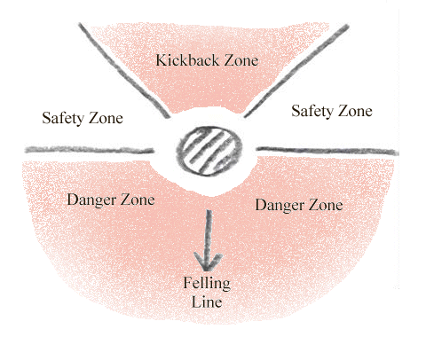
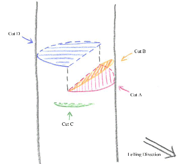
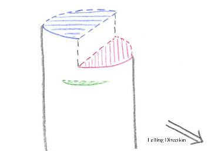

BUCG: Guide: How To Fell A Tree
Seeing as how a lot of our work involves some form of cutting down trees it seems like a good idea for us to do it well. This method should be used for any tree bigger than about 5cm in diameter.
-
Before doing anything, look at your tree. See where it is leaning (i.e. which direction it is likely fall) and check if it is caught up anywhere. If any branches are tangled with those of another tree then unpredictable things can happen.

-
If the tree is reasonably large then mark out the plan shown above - in your head if you like, but with sticks on the ground makes it clearer.

- The diagram above shows the correct proportions of
the cuts - precise measurements aren't mentioned here because of the
variation in sizes of trees. Also bear in mind that a horizontal cut
means at right angles to the trunk, not necessarily parallel to the
ground!
- Firstly cut your bird's mouth on the side you want
the tree to fall. This involves sawing in horizontally (A) about a
third of
the way through, then down at an angle (B) to remove a 'potato wedge'
shape.
- Next make two shallow cuts, one on either side of
the tree (C). This is to prevent the bark from being pulled off if it
splits.
- Finally comes the felling cut (D). Before you start
on this warn nearby people and check that the tree is going to fall
safely. Saw in horizontally from behind, above the level of the bird's
mouth.
- As you cut the tree will lean then fall - get ready
to jump out of the way (don't forget where the safe zones are) and
shout a
final warning!

- Once the tree has fallen the stump should look like
this.
Finish the job by sawing this off near to the ground, at a slight angle
to allow rain to run off.
Note: Trees should be respected, not least because they can cause some
serious damage to people and things when you saw them down. However
also remember that after coppicing, the tree is intended to grow
back so try not to damage anything you aren't cutting off.
Back to Guides.